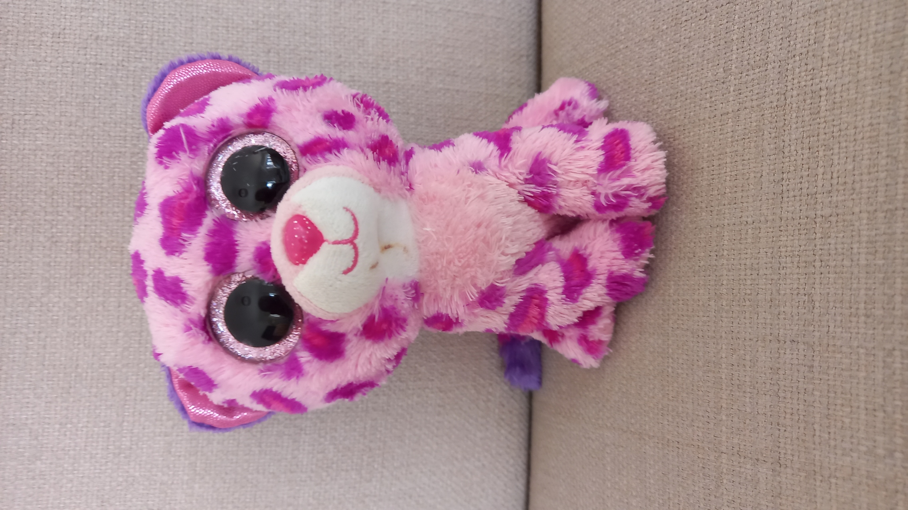

She may be small, but her perfection is BIG!
Glamour was born in 2017, and has always wanted perfection more than anything else.
Despite her young age, she is one of the older Beanie Boo types, being bred in 2013!
Like most Beanie Boos, her favourite colour is her main colour on her body.
2. She has a small birth mark under her chin!
3. She is one of the older types of Beanie Boos from 2013!
Despite her young age, she is one of the older Beanie Boo types, being bred in 2013!
Like most Beanie Boos, her favourite colour is her main colour on her body.
Fun Facts:
1. She has two sisters, who are also part of the Cat Club: Livvy and Dotty!
2. She has a small birth mark under her chin!
3. She is one of the older types of Beanie Boos from 2013!